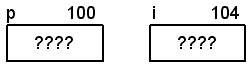

Pointers
- Memory is a vast collection of bits, either 0 or 1.
- Bits are grouped into 8-bit blocks called bytes. (8 is arbitrary but most modern computers
use this.)
- Bytes are grouped into words depending on the wordsize of the computer:
- A 16-bit machine has 2 bytes per word
- A 32-bit machine has 4 bytes per word
- A 64-bit machine has 8 bytes per word
- Every byte in a computer's memory is uniquely identified by it's location in memory.
- Each location is a cell and has two attributes: an address (the cell's location in memory) and a
value (contents of cell)
- Addresses and contents are known as l-values and r-values, respectively.
- Note that even though a word is made up of multiple bytes, it only has a single address.
- A byte is the smallest addressable unit (i.e. you can't address a single bit)
- All data in memory has an address from 0 up to the size of memory. 4 GB of memory would look like this (the contents are arbitrary)
- We can find out the address of a variable by simply using the address operator (which we've already seen with scanf)
int i = 10;
printf("The address of i is %p\n", (void *)&i); /* Use & to get the address */
printf("The contents of i is %i\n", i);
Output:
The address of i is 0x22cca4
The contents of i is 10
On computers where integers and addresses have the same range, it's possible to interchange them.
However, in general, you can't do this, and may likely get a warning from the compiler.
- Addresses look like integers, but they are different. (e.g. just like 3.0 is not the same as 3.0F or 3)
3 00000000000000000000000000000011 (int)
3.0F 01000000010000000000000000000000 (float)
3.0 0100000000001000000000000000000000000000000000000000000000000000 (double)
- The compiler will complain if you treat an address like an integer and vice-versa.
- The type of the address depends on what is stored there. (e.g. the address of an integer is not the same type as an address of a float)
- Up until now, all of the addresses (variables) the compiler has been using for data have contained integer, float, and double values.
- An address (variable) that holds the address of another variable is called a pointer.
We can declare pointer variables easily:
void foo(void)
{
int i; /* i can only store integer values */
/* The value of i is undefined at this point */
int *p; /* p can only store the address of an integer */
/* The value of p is undefined at this point */
p = &i; /* The value of p is now the address of i */
/* The value of p is now defined */
i = 10; /* The value of i is now 10 */
/* The value of i is now defined */
}
This is the notation that will be used when talking about identifiers in memory:
- identifier - The name of the identifier
- address - The arbitrary address (the actual values are meaningless, but are useful for discussion purposes)
- contents - The value stored at this location. ???? means it is undefined.
- When looking at arrays, since each cell is anonymous (unnamed), I'll only show the address above the first cell.
Visualizing the code above:
| After declarations for i and p | After assignment to p | After assignment to i |
|---|

|
|
|
Note: Be sure not to confuse the asterisk ( * ) used for multiplication with the asterisk
used to declare pointers. They are the same token, but have very different meanings.
Other examples:
int *pi; /* pi can only "point" to integers */
float *pf; /* pf can only "point" to floats */
double *pd; /* pd can only "point" to doubles */
short *ps; /* ps can only "point" to shorts */
long *pL; /* pL can only "point" to longs */
unsigned short *pus; /* pus can only "point" to unsigned shorts */
unsigned int *pui; /* pui can only "point" to unsigned ints */
/* etc.... you get the idea */
Unfortunately, we're not done abusing the asterisk ( * ). It has a third meaning as the indirection operator
also known as the dereference operator. Operator precedence chart
void foo(void)
{
int i = 10;
int *p = &i; /* operator * is used as a declaration here */
printf("The value of i is %i\n", i);
printf("The address of i is %p\n", (void *)&i);
printf("The value of p is %p\n", (void *)p);
printf("The address of p is %p\n", (void *)&p);
printf("The value of what p is pointing at is %i\n", *p); /* operator * is dereferencing the pointer p */
}
Output:
The value of i is 10
The address of i is 0x22cca4
The value of p is 0x22cca4
The address of p is 0x22cca0
The value of what p is pointing at is 10
Once we have a pointer to some data, we can read/write the data through the pointer:
void f5(void)
{
int i = 10; /* i has the value 10 */
int *p = &i; /* p has the address of i */
int j; /* j has undefined value */
printf("The value of i is %i\n", i);
printf("The value of *p is %i\n", *p);
j = *p; /* j has the value of i */
*p = 20; /* i has the value 20 */
printf("The value of j is %i\n", j);
printf("The value of i is %i\n", i);
}
Output:
The value of i is 10
The value of *p is 10
The value of j is 10
The value of i is 20
Visually:
| After declarations for i, p, j | After j = *p | After *p = 20 |
|---|
|
|
|
Watch out for these illegal expressions:
void foo(void)
{
int i = 10; /* i has the value 10 */
int *p = &i; /* p has the address of i */
int j; /* j has undefined value */
j = p; /* ILLEGAL: different types (compiler won't implicitly convert) */
p = 20; /* ILLEGAL: different type (compiler won't implicitly convert) */
}
Also, watch out for this as well. The compiler may not even warn you about it.
void f7(void)
{
int *p; /* p has undefined value (some random memory location) */
*p = 10; /* BAD: writing the value 10 to some random memory location */
}
You can have multiple pointers to the same address. The code below gives us three different ways to modify the
contents of i:
void foo(void)
{
int i = 10; /* i gets value 10 */
int *p; /* undefined */
int *q; /* undefined */
p = &i; /* p gets address of i */
q = p; /* q gets value of p (address of i) */
*p = 20; /* i gets value 20 (*p and *q evaluate to 20) */
*q = 30; /* i gets value 30 (*p and *q evaluate to 30) */
}
Visually:
| After declarations for p, q, i | After p = &i | After q = p |
|---|
|
|
|
| After *p = 20 | After *q = 30 |
|---|
|
|
Self-check: Given the code below, which of the assignment statements are illegal and why?
What does the compiler say about the illegal statements?
int i;
int *pi;
pi = i; /* 1. ??? */
pi = 5; /* 2. ??? */
pi = &i; /* 3. ??? */
*pi = i; /* 4. ??? */
*pi = 5; /* 5. ??? */
*pi = &i; /* 6. ??? */
Given these declarations:
/* Assume addresses of variables are */
/* a:100, b:104, c:108, d:112, e:116 */
/* Assume a 32-bit computer */
int a = 10;
int b = 108;
float c = 3.14F;
int *d = &a;
float *e = &c;
Diagram: (looks like an array, but it's not)
Showing the pointer arrows:
We can evaluate the expressions as such:
Expression Type Value
---------------------------------
a int 10
b int 108
c float 3.14
d int * 100
e float * 108
*d int 10
*e float 3.14
&a int * 100
&d int * * 112
*a illegal -----
*b illegal -----
*c illegal -----
A major benefit of using pointers is realized when we need another function to modify a value. The
simple example is scanf:
int a, b, c;
scanf("%d%d%d", &a, &b, &c);
We want scanf to modify our local variables, but scanf is unable to
access them (local scope). So, we need to pass them to scanf. We need to pass the addresses of
the local variables. If we just passed the values to scanf, any
changes made to them would be lost after returning from the function.
Suppose we want to write a function that exchanges the values of two integers.
Here's our first (failed) attempt:
| |
|---|
int main(void)
{
int x = 10;
int y = 20;
printf("Before: x = %i, y = %i\n", x, y);
swap(x, y);
printf(" After: x = %i, y = %i\n", x, y);
return 0;
}
|
/* Exchanges the values of the parameters */
void swap(int a, int b)
{
int temp = a; /* Save a for later */
a = b; /* a gets value of b */
b = temp; /* b gets old value of a */
}
Output:
Before swap: x = 10, y = 20
After swap: x = 10, y = 20
|
Note that to swap we can't just do this:
a = b; /* value of a is lost */
b = a;
What went wrong?
Visually:
| Initialize values, pass to swap | Make copy of a in temp | Exchange a,b |
|---|

|
|
|
Try it again, the correct way:
| |
|---|
/* Exchanges the values of the parameters */
void swap(int *a, int *b)
{
int temp = *a; /* Save a for later */
*a = *b; /* a gets value of b */
*b = temp; /* b gets old value of a */
}
|
int main(void)
{
int x = 10;
int y = 20;
printf("Before swap: x = %i, y = %i\n", x, y);
swap(&x, &y);
printf(" After swap: x = %i, y = %i\n", x, y);
return 0;
}
Output:
Before swap: x = 10, y = 20
After swap: x = 20, y = 10
|
Visually:
In main
before swap | Call swap, pass addresses | Make copy of a for later |
|---|
|
|
|
| Copy *b to *a (y to x in main) | Copy temp to *b (temp to y in main) | After swap |
|---|
|
|
|
Notes to remember:
- The correct swap function takes pointers to integers as parameters:
void swap(int *a, int *b); /* a and b are pointers to integers */
- You must pass the address of the integers you wish to swap:
int x = 10;
int y = 20;
swap(&x, &y); /* Must pass the addresses (pointers) of a and b */
- You must dereference the pointers in the function to get the contents:
int temp = *a; /* Dereference the pointer with the * operator */
In C, we can't pass an array to a function. We can only pass the address of the first element
(pointer to the first element). However, when we pass a pointer to some data, it is possible
for the function receiving the pointer to modify the data directly, as opposed to modifying
a copy of the data.
Let's see how this might be a problem.
This example works as expected (It finds the largest element in an array of integers).
A pointer to the first element is passed to the function
find_largest, along with the size (number of elements) in the array. Since the function
has a pointer to the first element, it can access every element of the array using the
subscript operator:
| |
|---|
int main(void)
{
int a[] = {4, 5, 3, 9, 5, 2, 7, 6};
int largest;
printf("Array before:\n");
print_array(a, 8);
largest = find_largest(a, 8);
printf("Largest value: %i\n", largest);
printf("Array after:\n");
print_array(a, 8);
return 0;
}
Output:
Array before:
4 5 3 9 5 2 7 6
Largest value: 9
Array after:
4 5 3 9 5 2 7 6
|
/* Assumes there is at least */
/* one element in the array */
int find_largest(int a[], int size)
{
int i;
int max = a[0]; /* assume 1st is largest */
for (i = 1; i < size; i++)
if (a[i] > max)
max = a[i]; /* found a larger one */
return max;
}
|
Let's modify the function to do something unexpected.
Now, the function is modifying the original data (not a copy). It seems that passing a pointer
to the data, rather than a copy, could be dangerous if the function does something we don't
expect.
Passing a pointer to a function allows the function to modify our data even if we don't want it to:
| |
|---|
/* Modifies the array the was passed in!! */
int find_largest_BAD(int a[], int size)
{
int i;
int max = a[0]; /* assume 1st is largest */
a[0] = 0; /* change first element! */
for (i = 1; i < size; i++)
{
if (a[i] > max)
max = a[i]; /* found a larger one */
a[i] = 0; /* set element to 0!! */
}
return max;
}
|
Output:
Array before:
4 5 3 9 5 2 7 6
Largest value: 9
Array after:
0 0 0 0 0 0 0 0
|
There is a solution to this problem. If we need to pass an array to a function, we must
pass a pointer, which gives the function the ability to mess with the data. If we want to
prevent the function from modifying the data in the array, we use the const
keyword to prevent the function from modify the elements of the array.
This makes the elements constant, meaning it is illegal to modify them:
/* Unable to modify the array since it's const */
int find_largest_BAD(const int a[], int size)
{
int i;
int max = a[0]; /* assume 1st is largest */
a[0] = 0; /* ILLEGAL: elements are const */
for (i = 1; i < size; i++)
{
if (a[i] > max)
max = a[i]; /* found a larger one */
a[i] = 0; /* ILLEGAL: elements are const */
}
return max;
}
Compiler errors:
main.c: In function `find_largest_BAD':
main.c:161: error: assignment of read-only location
main.c:166: error: assignment of read-only location
Going back to the original non-const version of this function:
int find_largest(int a[], int size);
If we really don't want our array to change, we declare it with the const keyword:
int main(void)
{
const int a[] = {4, 5, 3, 9, 5, 2, 7, 6}; /* Elements are constant (can't be changed) */
int largest = find_largest(a, 8); /* ILLEGAL: Function expects non-const array */
return 0;
}
Compiler error:
main.c:185: warning: passing arg 1 of `find_largest' discards qualifiers from pointer target type
Important: When you create a function that will accept arrays as parameters, be sure to mark them as const
if you do not intend to modify them. If you don't make them const, a lot of code will not be able to use your
function.
The const keyword can be used to protect the pointer as well as what's being pointed at (the pointee?).
Now that we know that when passing arrays to functions, we are really just passing a pointer,
these function declarations are 100% identical. Period. Absolutely NO difference. At. All.
It is purely cosmetic, the compiler treats them exactly the same, always, without exception.
int find_largest(int a[], int size); /* Use array notation */
int find_largest(int *a, int size); /* Use pointer notation */
Finally, never do this! Never return a pointer to a local variable. Ever. In other words, don't do this:
/* Function returns a pointer to an int */
int *foo(void)
{
int i = 10; /* i is local (on the stack) */
return &i; /* This will be undefined!! */
}
Fortunately, most compilers today will point out the sheer insanity of your code:
main.c: In function `foo':
main.c:174: warning: function returns address of local variable
Some compilers may even treat this as an error due to the abomination that it is
(because it is always a bug in the code).
Sometimes you want to make sure that you don't accidentally change values in your programs. The safest
way to do this is to mark the identifiers with the const keyword.
With pointers, you have more flexibility with const. You can make the pointer itself constant,
which means once it points at something, it can never be changed to point at something else. Or, you can make
the data pointed at constant, which means that although you can change the pointer to point at something else,
you can't change what's being pointed at.
Here are the four cases:
- Neither the pointer nor the data being pointed at (the pointee) is const. Both can be changed:
int *pi; /* pi is a (non-const) pointer to a (non-const) int */

- The pointer is not const, but the data pointed at (the pointee) is const. The data is protected.
Only the pointer can change:
const int *pci; /* pci is a pointer to a const int */

- The pointer is const but the data being pointed at is non-const. The pointer is protected. The data can be changed through the pointer.
int * const cpi = &i; /* cpi is a const pointer to an int */

- Both the pointer and the data being pointed at are const. Both are protected. Neither can be changed:
const int * const cpci = &ci; /* cpci is a const pointer to a const int */

Points to remember:
- If you mark something as const, you are indicating that it should not change.
- If you DO NOT mark something as const, you are indicating that it should change.
- Therefore, if you are not going to change some data in your program, make sure to mark it const.
- Note that with function parameters, these rules really only apply to pointers (addresses) and arrays. Why?
- When reading pointer declarations with const, read it from right to left.
- The const is a qualifier on the type.
Here is an example that shows the const keyword in action in various ways. Make sure you understand every statement.
void foo(void)
{
int i = 5; /* 1. i is a non-constant int */
int j = 6; /* 2. j is a non-constant int */
const int ci = 10; /* 3. ci is a constant int */
const int cj = 11; /* 4. cj is a constant int */
int *pi; /* 5. pi is a pointer to an int */
const int *pci; /* 6. pci is a pointer to a const int */
int * const cpi = &i; /* 7. cpi is a const pointer to an int */
const int * const cpci = &ci; /* 8. cpci is a const pointer to a const int */
i = 6; /* 9. Ok, i is not const */
j = 7; /* 10. Ok, j is not const */
ci = 8; /* 11. ERROR: ci is const */
cj = 9; /* 12. ERROR: cj is const */
pi = &i; /* 13. Ok, pi is not const */
*pi = 8; /* 14. Ok, *pi is not const */
pi = &j; /* 15. Ok, pi is not const */
*pi = 9; /* 16. Ok, *pi is not const */
pci = &ci; /* 17. Ok, pci is not const */
*pci = 8; /* 18. ERROR: *pci is const */
pci = &cj; /* 19. Ok, pci is not const */
*pci = 9; /* 20. ERROR: *pci is const */
cpi = &j; /* 21. ERROR: cpi is const */
*cpi = 10; /* 22. Ok, *cpi is not const */
*cpi = 11; /* 23. Ok, *cpi is not const */
cpci = &j; /* 24. ERROR: cpci is const */
*cpci = 10; /* 25. ERROR: *cpci is const */
pi = &ci; /* 26. DANGER: constant ci can be changed through pi */
}
Detailed messages
Suppose we had an array of 8 chars (8-bits per char) and assigned a value to each char:
unsigned char bytes[8];
bytes[0] = 'J'; /* 0x4A */
bytes[1] = 'o'; /* 0x6F */
bytes[2] = 'h'; /* 0x68 */
bytes[3] = 'n'; /* 0x6E */
bytes[4] = 205; /* 0xCD */
bytes[5] = 204; /* 0xCC */
bytes[6] = 76; /* 0x4C */
bytes[7] = 62; /* 0x3E */
Remember that we can initialize the array as such:
unsigned char bytes[] = {'J', 'o', 'h', 'n', 205, 204, 76, 62};
If we assume that the address of the bytes variable is 1000, the raw bits of the array would look like
this in memory:
Each of the 8 chars is uniquely identified by it's address:
Address (l-value) Contents (r-value)
(shown in decimal) (shown in binary)
----------------------------------------------
&bytes[0] ==> 1000 bytes[0] ==> 01001010
&bytes[1] ==> 1001 bytes[1] ==> 01101111
&bytes[2] ==> 1002 bytes[2] ==> 01101000
&bytes[3] ==> 1003 bytes[3] ==> 01101110
&bytes[4] ==> 1004 bytes[4] ==> 11001101
&bytes[5] ==> 1005 bytes[5] ==> 11001100
&bytes[6] ==> 1006 bytes[6] ==> 01001100
&bytes[7] ==> 1007 bytes[7] ==> 00111110
We can draw the diagram any way that we like, the computer doesn't care.
As single printable characters:
As integer equivalents of the characters (ASCII values):
You can perform limited arithmetic with pointers:
- pointer + integer (result is a pointer)
- pointer - integer (result is a pointer)
- pointer - pointer (result is a signed integer, ptrdiff_t)
When adding/subtracting integers:
The integers that are added to pointers are scaled by the size of the type of pointer.
The sizes of *p assume a 32-bit machine:
Expression Type of p Size of *p Value added
--------------------------------------------------------------------
p + 1 char * sizeof(char) == 1 1
p + 1 short * sizeof(short) == 2 2
p + 1 int * sizeof(int) == 4 4
p + 1 float * sizeof(float) == 4 4
p + 1 double * sizeof(double) == 8 8
p + 1 Foo * sizeof(Foo) == X X
p + 2 char * sizeof(char) == 1 2
p + 2 short * sizeof(short) == 2 4
p + 2 int * sizeof(int) == 4 8
p + 2 float * sizeof(float) == 4 8
p + 2 double * sizeof(double) == 8 16
p + 2 Foo * sizeof(Foo) == X 2 * X
p + 3 char * sizeof(char) == 1 3
p + 3 short * sizeof(short) == 2 6
p + 3 int * sizeof(int) == 4 12
p + 3 float * sizeof(float) == 4 12
p + 3 double * sizeof(double) == 8 24
p + 3 Foo * sizeof(Foo) == X 3 * X
In the table above, Foo is some user-defined object that requires X bytes in memory. The compiler
will know about Foo and will scale the value by the appropriate amount. For example, if sizeof(Foo)
is 20, then 2 * X would be 40 and 3 * X would be 60.
Note: Pointer arithmetic is only valid if the pointer is pointing into an array.
If the pointer is not pointing inside an array, the behavior is undefined. When subtracting
two pointers, both pointers must be pointing into the same array, otherwise the result
is undefined.
We can use pointers with arrays instead of subscripts. Given this array and integer pointer:
int a[5];
int *pi;
We have this layout:
Initializing each element of an integer array to 0:
| After the first iteration |
|---|
for (pi = &a[0]; pi < &a[5]; pi++)
*pi = 0;
|
|
We can combine the increment and dereference operators. All of these loops do the same thing.
You may want to refer to your precedence chart.
for (pi = &a[0]; pi < &a[5];)
*pi++ = 0;
or:
pi = &a[0];
while (pi < &a[5])
*pi++ = 0;
or
for (pi = &a[5]; pi > a;)
*--pi = 0;
Subtracting pointers
- Subtracting two pointers (finding the difference) is only valid when both
pointers point into the same array.
- The difference is in elements, not bytes, so:
int a[5];
int *pi1 = &a[1];
int *pi2 = &a[4];
int diff = pi2 - pi1; /* diff is 3 */
diff = pi1 - pi2; /* diff is -3 */
Visually:
Comparing Pointers
- Both pointers must point into the same array if the result is to have any meaning.
- You can use the operators: <, <=, >, >= with pointers that point into the same array.
- You can use the equality operators, = =, != with arbitrary pointers.
Notes on using pointers with arrays:
- The results of pointer arithmetic are only defined if the pointer is pointing
at an element of an array.
- Pointing at an element before the start of the array is undefined (as per the Standard).
- Pointing at an element one past the end of the array is legal, but dereferencing
it is not.
- Technically, the type returned from subtracting two points is ptrdiff_t, but
an integer can be used in most cases. (The exception is if the number of elements
between the pointers is larger than what a signed integer can hold, which is pretty large.)
The short Q and A:
Q: Are pointers the same as arrays?
A: No. Never. Ever. Any questions?
(Read all about the historical accident or mistake that confuses beginning programmers.)
Moving on...
Simple points:
- The address of the array, a, is 100.
- The address of the first element, a[0], in the array is also 100.
- The type of a is array of 5 ints.
- The type of a[0] is int.
- The type of &a is pointer to array of 5 ints.
- The type of &a[0] is pointer to int.
Suppose we pass this array to some function:
| Call the function | The function definition |
|---|
foo(a, 5);
|
void foo(int x[], int elements)
{
/* do whatever... */
}
|
We know we can't pass an array by value, we can only pass an address. (The address 100 in this example.) But which "100"?
The array or the int?
Important note:
When passing an array to a function, the compiler passes
a pointer to the first element
(i.e. the address of the first element) to the function.
Understanding the above statement is critical. Read it. Learn it. Live it.
This means that these two function prototypes have the exact same meaning:
| Using array notation | Using pointer notation |
|---|
void foo(int x[], int elements);
|
void foo(int *x, int elements);
|
Two functions that print an array of integers: (all functions do the same exact thing)
| Using array notation | Using pointer notation |
|---|
void print_array1(int x[], int elements)
{
int i;
for (i = 0; i < elements; i++)
printf("%i ", x[i]);
}
|
void print_array2(int x[], int elements)
{
int i;
for (i = 0; i < elements; i++)
printf("%i ", *x++);
}
|
void print_array1(int *x, int elements)
{
int i;
for (i = 0; i < elements; i++)
printf("%i ", x[i]);
}
|
void print_array2(int *x, int elements)
{
int i;
for (i = 0; i < elements; i++)
printf("%i ", *x++);
}
|
Of course, we'd really want to make sure not to modify the array elements:
| Using array notation | Using pointer notation |
|---|
void print_array1(const int x[], int elements)
{
int i;
for (i = 0; i < elements; i++)
printf("%i ", x[i]);
}
|
void print_array2(const int *x, int elements)
{
int i;
for (i = 0; i < elements; i++)
printf("%i ", *x++);
}
|
This means that, when dealing with arrays, we can use subscript notation or
pointer notation.
The Basic Rule:
array[index]
is the same as
*(array + index)
where:
- array is an array of any type
- index is any integral expression
This means:
- Referencing an element of an array is done using a pointer and an offset.
- The pointer is usually the address of the start of the array (which is the address of the first element).
- The offset is scaled by the size of the element type. (Pointer arithmetic)
- The compiler converts all array references to a pointer/offset, so:
void f(void)
{
int array[] = {5, 10, 15, 20, 25};
int index = 3;
printf("%i\n", array[index]); /* 20 */
}
According to the Basic Rule:
array[index] ==> *(array + index)
Don't forget that due to C's built-in pointer arithmetic, the addition (e.g. array + 3) is scaled:
array[3] ==> *(array + 3 * sizeof(int)) ==> *(array + 12 bytes)
The above means: the fourth element is 12 bytes from the address of array. You
can see this from looking at a similar diagram:
As a final note, since addition is commutative, these are equivalent:
array[3]
3[array]
because they lead to this:
array[3] ==> *(array + 3)
3[array] ==> *(3 + array)
The compiler is doing all of the pointer arithmetic behind the scenes. It goes without saying, but
I'm going to say it anyway: "Never, ever use the second form above!".
Relationship Between Subscripts and Pointers
Using the rule to convert a subscript to a pointer/offset, we get:
a[i] ==> *(a + i)
&a[i] ==> &(*(a + i))
&a[i] ==> &*(a + i)
&a[i] ==> a + i
This shows that the address of any element is just the base address of the array plus the index (scaled).
char a[] = "abcdef";
char *p = a;
printf("%p, %p, %p, %p, %p\n", (void *)a,
(void *)(a + 2),
(void *)&*(a + 2),
(void *)(p + 2),
(void *)&*(p + 2));
Output:
0012FED4, 0012FED6, 0012FED6, 0012FED6, 0012FED6
Other equivalences:
a[i] ==> *(a + i)
a[0] ==> *(a + 0)
a[0] ==> *a
&a[0] ==> &*a
&a[0] ==> a
These calls are equivalent:
f1(*a); /* pass first element of array */
f1(a[0]); /* pass first element of array */
and so are these:
f2(&a[0]); /* pass address of first element */
f2(a); /* pass address of first element */
Pointer Expressions and Arrays
Given this code:
int a[10] = {5, 8, 3, 2, 1, 9, 0, 4, 7, 6};
int *p = a + 2;
Abstract diagram:
or shown with concrete values (addresses are arbitrary, as usual):
Give the equivalent expression using a. (Hint: Determine the type of each expression first)
- p
- p[0]
- *p
- p + 3
- *p + 5
- *(p + 6)
- p[6]
- &p
- p[-1]
- p[9]
You will most certainly see this kind of question on quizzes and exams as it checks to
see if you really understand C/C++ programming. Make no mistake, this is one of the most important
concepts you need to understand if you're going to be a C/C++ programmer (i.e. a game programmer).